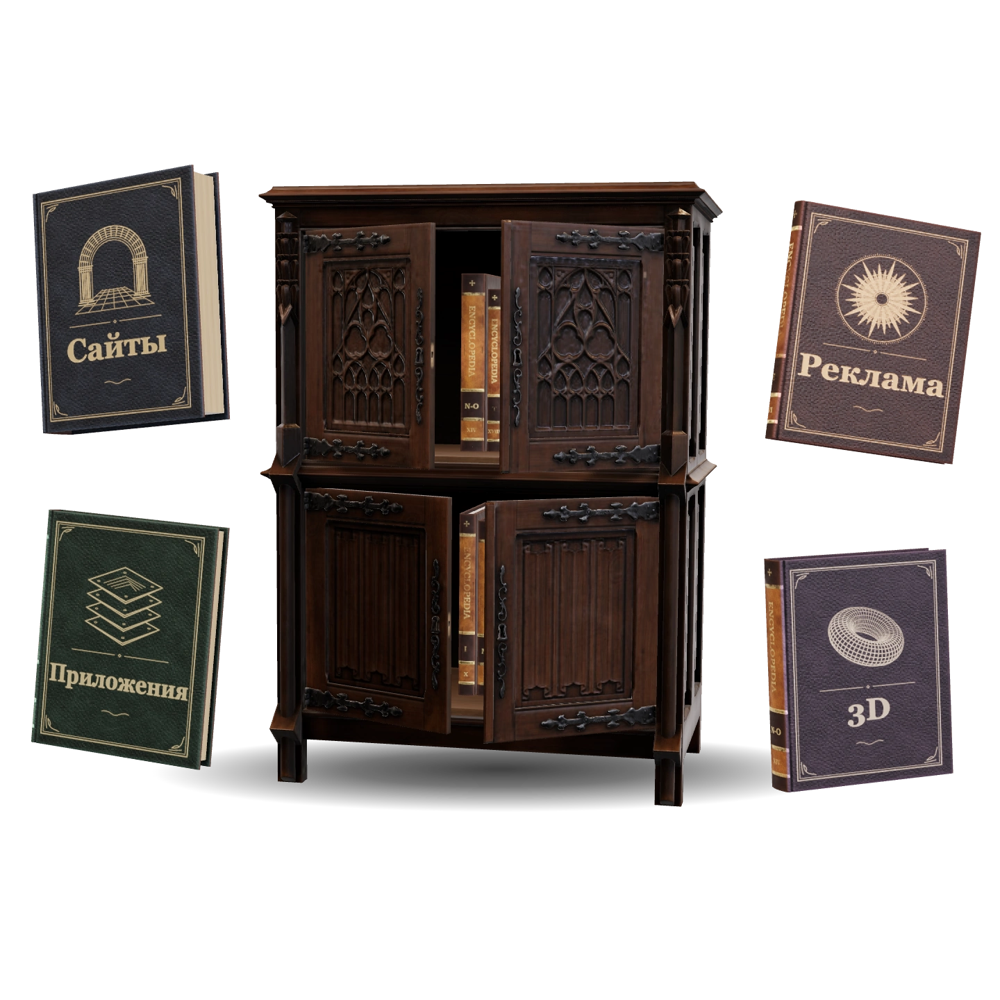

    <section id="hybrid" class="concept hybrid" aria-labelledby="hybrid-title">
      <div class="hero hybrid-hero">
        <div class="hybrid-atmosphere" aria-hidden="true"></div>
        <div id="hybrid-scene-slot" class="hybrid-scene-slot"><div class="scene" id="scene" role="group" aria-label="Книжный шкаф с четырьмя направлениями работы">
          
          <nav class="scene-documents" aria-label="Выберите книгу">
            <a class="scene-document" data-document="sites" href="#service-sites" aria-label="Сайты — перейти к услуге"></a>
            <a class="scene-document" data-document="ads" href="#service-ads" aria-label="Реклама — перейти к услуге"></a>
            <a class="scene-document" data-document="apps" href="#service-apps" aria-label="Приложения — перейти к услуге"></a>
            <a class="scene-document" data-document="3d" href="3d/index.html" aria-label="3D — открыть интерактивную сцену"></a>
          </nav>
        </div></div>
        <div class="hybrid-heading">
          <h1 class="hybrid-title" id="hybrid-title" aria-label="Дизайн. 3D и моушн. Разработка.">
            <span class="hybrid-line hybrid-think" aria-hidden="true"><span class="word">ДИЗАЙН.</span></span>
            <span class="hybrid-line hybrid-volume" aria-hidden="true"><span class="word">3D И МОУШН.</span></span>
            <span class="hybrid-line hybrid-make" aria-hidden="true"><span class="word">РАЗРАБОТКА.</span></span>
          </h1>
          <div class="hybrid-intro">
            <p>Сайты и приложения, 3D-визуализации, рекламные ролики и графика для бизнеса.</p>
          </div>
          <div class="hybrid-actions">
            <a class="primary-button" data-telegram-link href="{{telegramHref}}" target="_blank" rel="noopener noreferrer" {{withTelegram}}><span>Обсудить в Telegram</span><span class="button-icon" aria-hidden="true">↗</span></a>
            <button class="primary-button" data-open="brief" data-without-telegram {{withoutTelegram}}><span>Обсудить проект</span><span class="button-icon" aria-hidden="true">↗</span></button>
          </div>
        </div>
      </div>
    </section>
